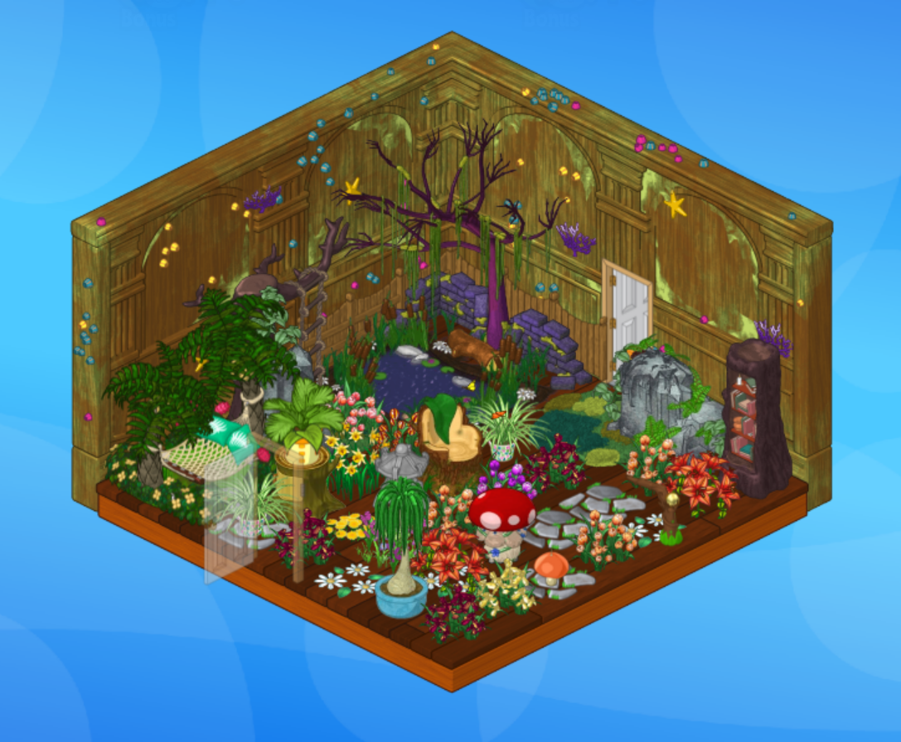
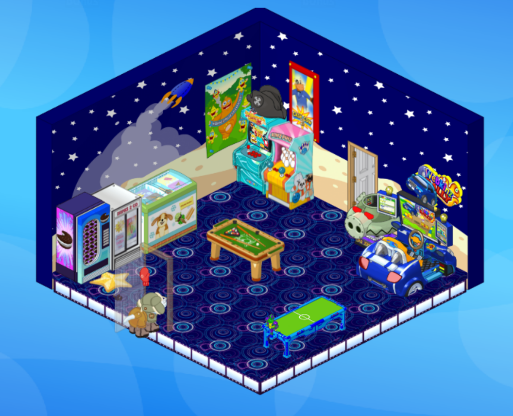
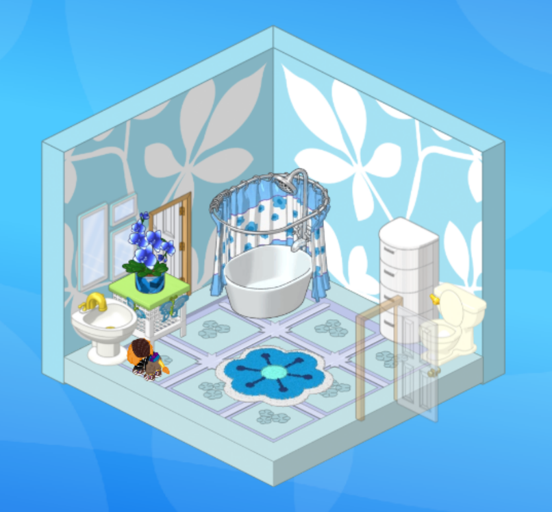
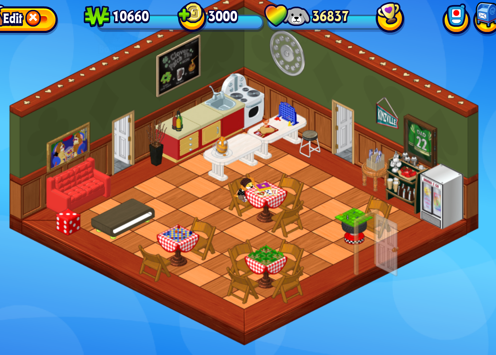
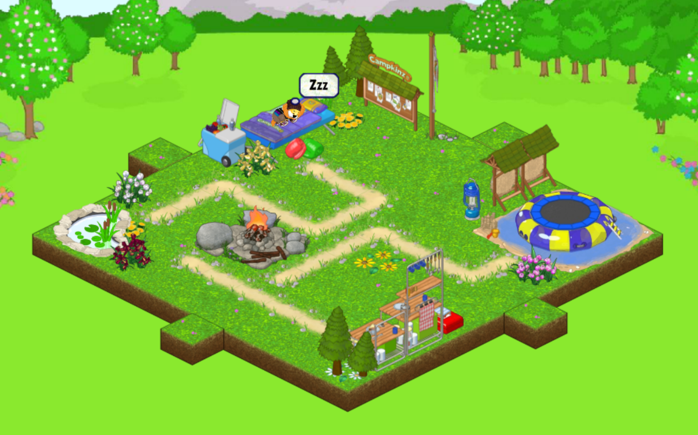
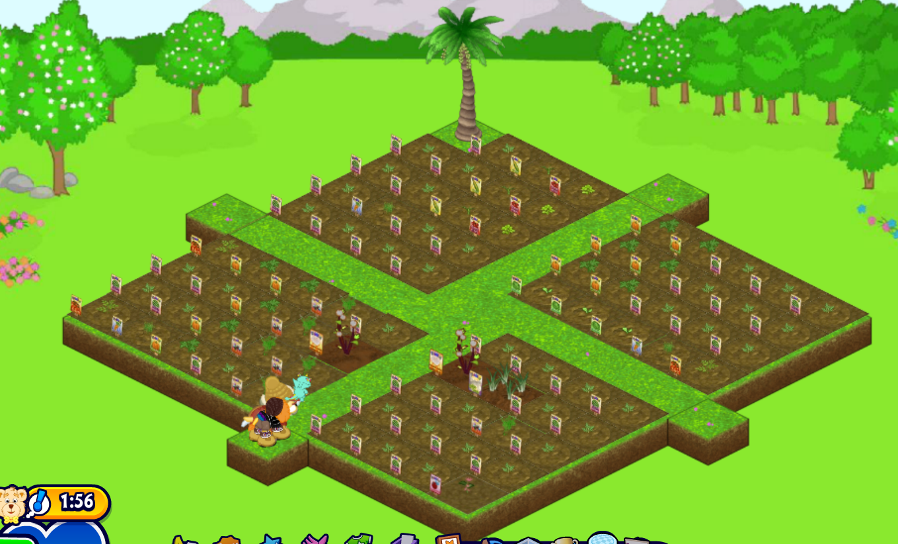
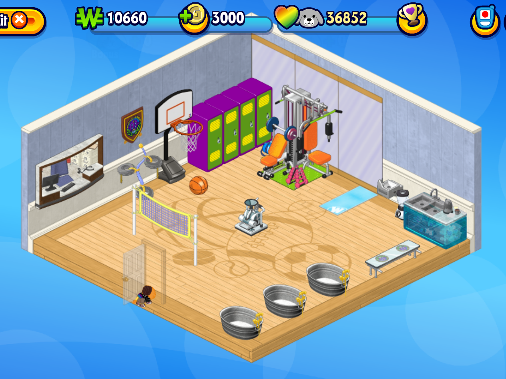
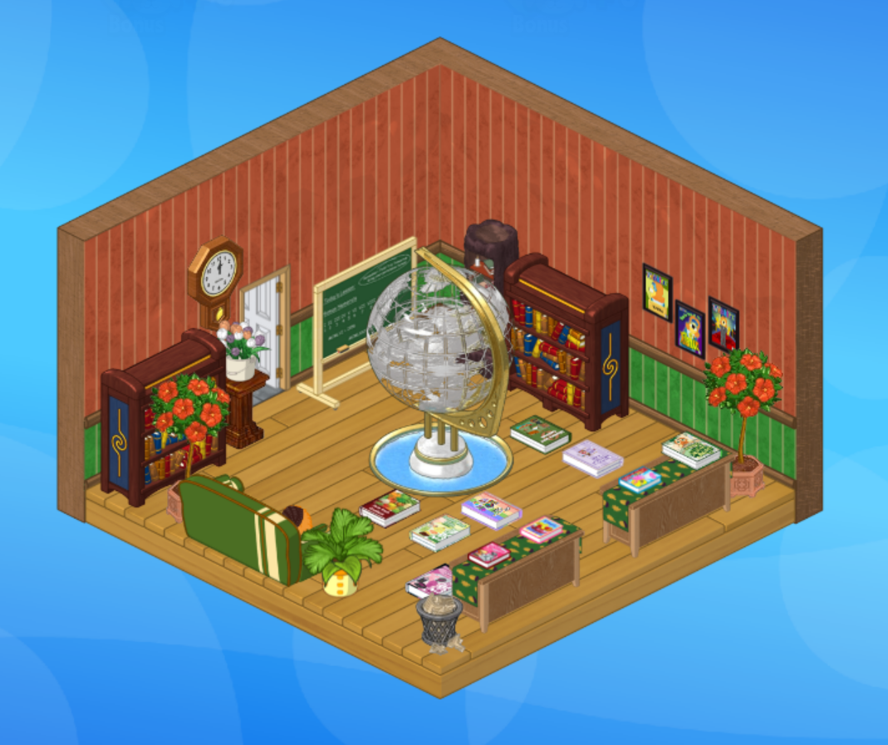
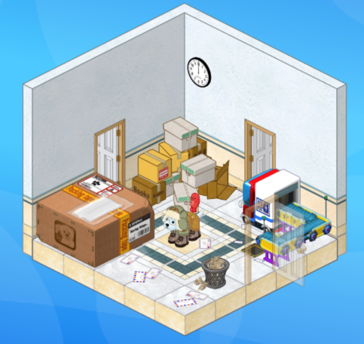
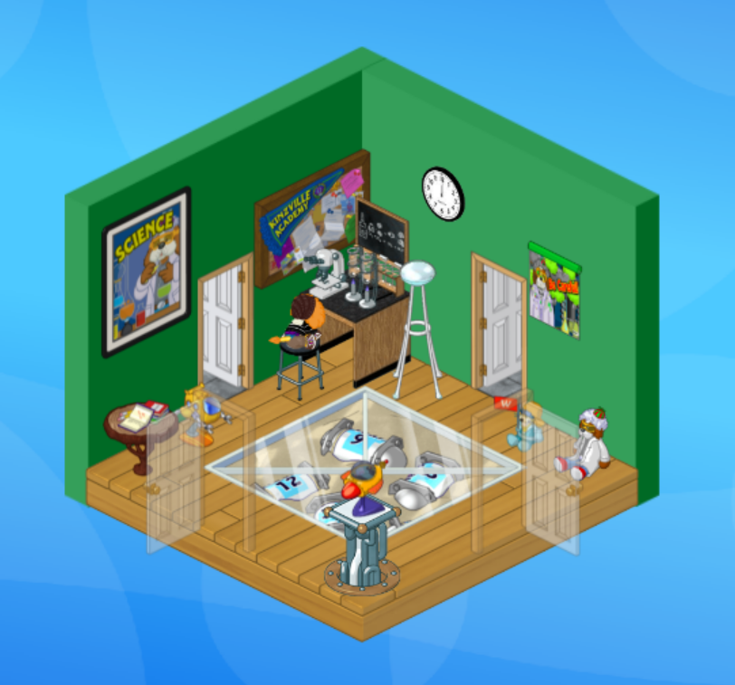

This is my bog room!!!!! I'm quite proud of this one. It took me way too long to find all the parts of it to make it look as natural as possible. The wallpaper definitely caused me the most grief. I ended up going with the underwater shipwreck wallpaper and I think it worked pretty well.
A fun fact about this room: It has a pond/pool, trampoline, and bed as activites. The room also may or may not be inaccessible from one of the doors... Listen. I forgot you can't walk through plants and at that point I had already placed everything and I absolutely was not going to go back in just to fix a plant. Just don't go through that door.
I think I might go back and add some vines along the walls, but honestly I'm quite satisfied with this room as is. It took a long time but I think it was worth it :)

This is my arcade room. I don't love it honestly. This room has caused me so much grief and I think the main issue is the size. Right now it uses a medium size room, but I think it might be helpful to change it to a large size room (like the cafe and gym).
I do really like my wall of food. It includes a dispenser item which is something quite sought after (aka super cool flex). The other two items are fridges so I use them to store my special food I don't want to give to my pets.
This room obviously relies heavily on the arcade machines inside, most of which were obtained at the Spree game shopping mall. Fun fact about them, they are for deluxe only games but by going through the machines instead of the arcade, I as a non-deluxe player can still play them, which is fun. The room also has some more regular mini games like the hockey and pool tables. I used to have a few other games but I couldn't figure out how to place them nicely so I removed them. Again, I think I should change this room into a large room to solve all these issues.

Okay. So. This room was created when I was scrolling through my inventory and I realized how many of these blue items I had from playing games in the arcade. It sucks because they don't really fit any of the rooms I already had, but then I realized I could just make a small room and dedicate it to them! So that's what this is. My blue bathroom.
I honestly don't have much to say about it. It kinda speaks for itself. I like the wallpaper and mirror. I think the placement of the flowers is quite nice. I didn't know how to place the toilet without it looking weird but it's also literally a bathroom so I think that was just me overthinking.

This is probably one of my other favourite rooms, if only because of how long I spent on it. I'm not totally happy with it but overall I'm quite proud.
You may notice one of the tables is not like the other. This is because the table I chose is one that comes from completing an achivement and can therefore only be earned once per account. This makes it quite difficult to fill my room with them. I just need one more and then I'll be done though!
One of my favourite little details is in the chairs. The one different table has one chair while the one beside it (where Misnomer is sitting) has three and I like to imagine there was a group of people sitting there and they had to drag a chair over to accommodate everyone. I love adding little storytelling details like that.

This was my first attempt at an outdoor themed room. I decided to use some of the Kinzcamp items I got from completing challenges to make a camp themed room and I think it worked pretty well.
The paths actually follow where the pets walk from one area to another. I would prefer them to look better, but it bothered me how they'd break the path whenever I tried to move my pets. They won this time.
Not a ton to say about this one, but I did give a little chuckle as I placed the bow and arrow targets directly in front of the trampoline. Surely nothing bad could come from that...
Oh also the little campsite in the bottom right corner works as a stove, same with the campfire. Which I think is kinda cool.

Honestly nothing to really say about this. It's just my room to grow my "farm fresh" plants. I sell them back to the Kinz Shop. 10kc for a watermelon. If you plant a lot of melons, that's a decent amount of kinzcash.
That tree in the back is a plant. It makes coconut drinks which is kinda cool. I've also got chocolate egg plants. Fun stuff.

I'm not gonna lie, I completely forgot about this room until I was taking screenshots for this website lol. I like the random sandwich maker just in the middle of the room. tbh, I quite like this room. I think I'm gonna wanna go back and edit it but I remember it being a struggle when I first made it. I want it to have the vibes of a real gym, with a small kitchen and ice tubs.

Ahhhh I love this room! I wanted a space to put all my DIY and recipe books so the library was born! It was such a perfect place to put the statue I got. Does it make sense to have an unguarded water feature in the middle of a room filled with books? Absolutely not. But it's Webkinz so it doesn't matter :)
I just think this room is so cozy and I wanna curl up on the couch with a book of my own.

This room came from me realizing I could just make a small room for this random machine I got that I didn't have a place for. Hoenstly, I'm kinda obsessed with this room. I love it. I think I did a great job picking a floor and wallpaper and the clock is just perfect. You know it's got that annoying ticking sound that drives you insane.
Fun fact is that the machine moves and it shows mail packages running along the conveyor belt. Also the huge box on the left is a storage container.

Super fun little room. It serves absolutely no purpose other than for fun. I like all the posters I've got up and the weird thing on the floor. I'm still not sure what it is but I think it fits the vibe, don't you?